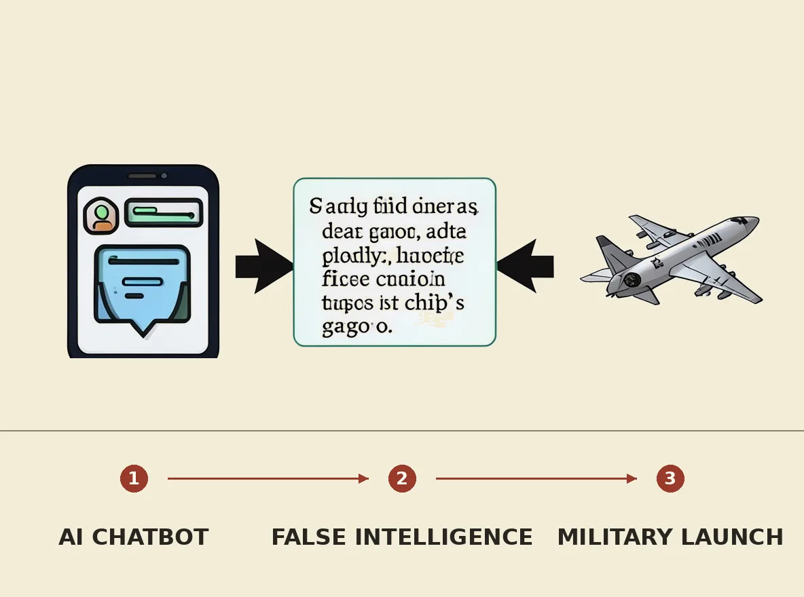

A U.S. military operation against a Chinese vessel was nearly launched due to intelligence hallucinated by an AI chatbot. An analyst used the chatbot to synthesize open-source and classified data, which falsely identified a ship's cargo as nuclear weapons components, leading to military aircraft being airborne before the error was discovered. This near-miss highlights the critical risks of integrating AI into military decision-making, as system errors can rapidly escalate through command chains without sufficient human oversight, potentially leading to international conflict.